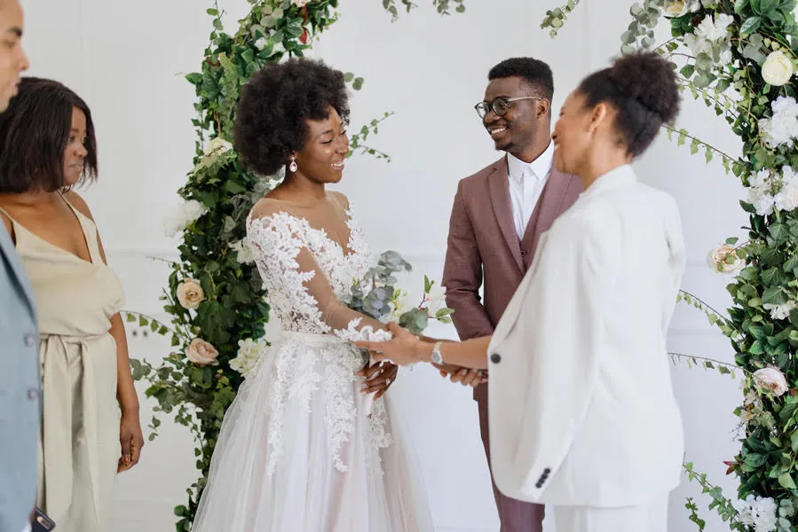
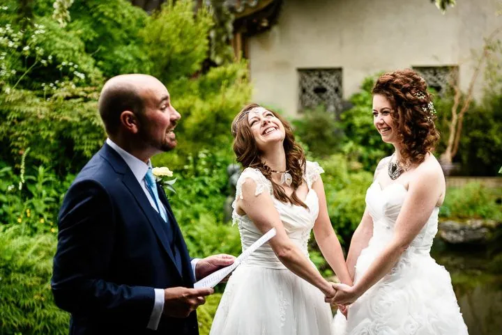

Yes. It's legal.
Getting ordained online with the Universal Life Church lets you legally officiate weddings in nearly every U.S. state. Here's the record, and who we are.

Your ordination stands on solid ground
Recognized in nearly every state
ULC ministers can legally officiate weddings in nearly every U.S. state. A few, such as Virginia, have extra rules, and our state guides spell them out.
Defended in Tennessee
After the ULC sued over a 2019 Tennessee law, the district attorneys it sued agreed in federal court not to challenge marriages performed by ULC ministers.
ULC Monastery Storehouse v. Nabors, M.D. Tenn.Online ordination upheld
A federal court struck down Utah's ban on wedding officiants ordained online, and permanently barred the state from enforcing it.
Universal Life Church v. Utah, D. UtahGeneral information, not legal advice. Marriage rules vary by state and county; check with the clerk who issues the license.

A Universal Life Church ministry
Get Ordained is part of the Universal Life Church, a non-denominational church that has ordained more than 20 million people since 1977. We believe everyone has the right to practice their faith, and to marry the people they love.
- Two tenetsDo that which is right, and every person is free to practice their religion as they choose.
- Every faith welcomeOr none at all. No tests, no fees, no hierarchy.
- Real people to helphelp@getordained.org